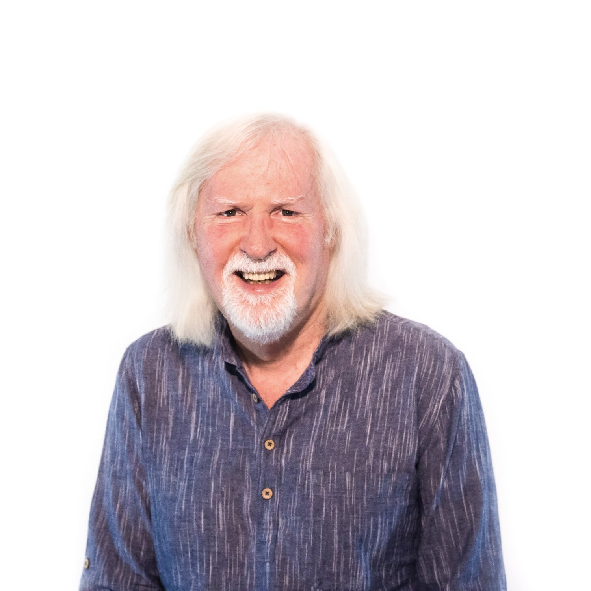

Tim Svoboda
President · YWAM San Francisco Bay Area CoordinatorAn International Cities Coordinator for YWAM, Tim served in India from 1983 to 2007 as National Director of YWAM India and Chennai City Coordinator, and founded the Chennai Transformation Network. He holds a Doctor of Ministry from Bakke Graduate University, where he also teaches.